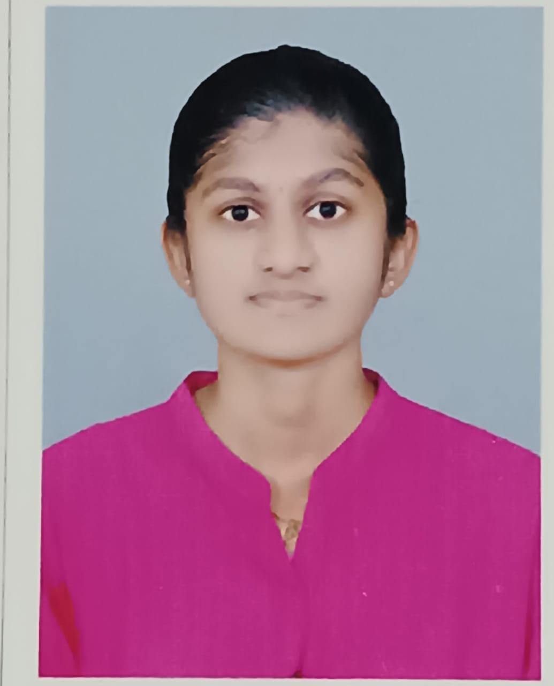
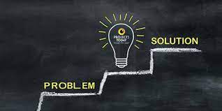

RESUME
NAME: KOWSIKA A

ADDRESS: 6, Naduthottam, Uthukuli R.S.
EMAIL ID:-kowsikaa.22it@kongu.edu
CONTACT NO: 9345435385
CAREER OBJECTIVE:-
To succeed in an environment of growth and excellence and earn a job
which provides me job satisfaction and self-development and helps me achieve
personal as well as organizational goals.
EDUCATIONAL QUALIFICATION:-
| S.No |
Qualification |
Board/University/Institute |
School/College |
Year of passing |
Percentage |
| 1 |
10th |
Board |
Kongu Matric Higher Secondary School, Uthukuli. |
2020 |
95.6% |
| 2
| 12th |
Board |
Kongu Matric Higher Secondary School, Uthukuli. |
2022 |
96.33% |
TECHNOLOGY STACK:-
Programming Languages: Python, C, C++ Java
Web Technologies: HTML, CSS
Database Tools: MySQL, SQLite, Microsoft SQL Server
Version Control: Git, GitHub,
GitLab.
PROJECTS:-
-

E-commerce Platform Enhancement Project
- Led a cross-functional team to improve user experience and performance on an e-commerce
platform.
- Achieved a 20% increase in conversion rates and enhanced overall customer satisfaction.
-
Predictive Analytics for Customer Churn Project
- Implemented a machine learning model to predict customer churn.
- Reduced attrition rates by 15% through targeted retention strategies based on the analysis.
-
IoT-Enabled Smart Home Automation System
- Developed and implemented an IoT-based smart home automation system.
- Integrated various devices and sensors to enhance energy efficiency and user convenience.
-
Community Wellness Initiative: Health and Fitness App
- Spearheaded the development of a health and fitness mobile app.
z
- Achieved over 50,000 downloads within the first three months of launch.
-
Sustainable Development with AI-Powered Bots
- Contributed to sustainable development initiatives by implementing AI-powered bots.
- Streamlined processes and reduced resource consumption, aligning with environmental goals.
Projects
CERTIFICATION COURSES:-
-
Introduction to Artificial Intelligence(CSM)
- Issuing Organization::Infosys SpringBoard
- Completion Date: 24 December 2022
-
Introduction to Deep Learning
- Issuing Organization: :Infosys SpringBoard
- Completion Date: 4th August 2023
-
Introduction to Natural Language Processing
- Issuing Organization: :Infosys SpringBoard
- Completion Date: 1st October 2023
-
Artificial Intelligence Foundation Certificate
- Issuing Organization:Infosys SpringBoard
- Completion Date: 18th January 2024
Course
LEADERSHIP QUALITY:-
- Served as an Executive member in Woman Development Cell for the year 2023-2024.
- Assumed the role of Inplant Training Coordinator for the year 2023-2024.
- Contributed as an Executive member in Self-Development Club for the year 2024.
- Led coordination efforts as a Coordinator in VIVERE-2k24 for the year.
PAPER PRESENTATION:-
- Delivered a paper on Electronic-Business at Kongu Engineering College.
- Shared insights on Neuro-technology and Brain-Computer Interfaces at Kongu Engineering College.
- Showcased a paper on Nano-technology at Hindustan Institute of Technology.
- Discussed findings on Communication Networks at Bannari Amman Institute of Technology.
- Highlighted insights into Blockchain-Technology at PSG College of Technology
INDUSTRY COLLABORATION:-
-
Collaborated with XYZ Corporation:
Worked closely with XYZ Corp on a joint project, resulting in a 20% improvement in process efficiency.
-
Partnered with ABC Innovations:
Collaborated with ABC Innovations to implement innovative solutions, enhancing product functionality and user
experience.
PERSONAL DETAILS:-
Name:Kowsika A
Father's Name:Arumugam K.
Mother's Name:Selvi A.
Religion:Hindu.
Nationality: Indian.
Languages Known:Tamil, English, Hindi.
Mobile Number: 9345435385.